CNF Laravel Business Management System
Complete enterprise solution for business operations, financial management, and reporting. Built with Laravel and modern admin panel integration.
Introduction
Welcome to CNF Laravel Business Management System - a comprehensive enterprise solution designed to streamline business operations, financial management, and reporting. Built on the robust Laravel framework with modern admin panel integration.
What is CNF Laravel?
CNF Laravel is a feature-rich business management system offering:
- Multi-branch Management: Complete control over multiple business locations
- Employee Management: Comprehensive staff management with role-based access
- Financial Tracking: Advanced accounting, ledger management, and financial reporting
- Job & Project Management: End-to-end job tracking and billing
- Real-time Reporting: Comprehensive analytics and business intelligence
- Security & Access Control: Robust role-based permission system
System Requirements
Ensure your hosting environment meets these requirements for optimal performance:
| Component | Minimum | Recommended |
|---|---|---|
| PHP Version | 7.4+ | 8.1+ |
| Laravel Framework | 8.0 | 9.0+ |
| Database | MySQL 5.7 | MySQL 8.0 |
| Web Server | Apache 2.4 / Nginx 1.18 | Nginx with PHP-FPM |
| Memory | 256MB RAM | 1GB+ RAM |
| PHP Extensions | BCMath, Ctype, JSON, Mbstring, OpenSSL, PDO, Tokenizer, XML, cURL, GD Library | |
mod_rewrite is enabled for Apache servers and
proper Nginx configuration for clean URLs.
Installation Guide
Follow these steps to install CNF Laravel Business Management System:
Upload Project Files
Upload all project files to your web server, ensuring the directory structure is maintained.
Environment Configuration
Configure your environment file with database and application settings:
Install Dependencies
Install PHP dependencies and generate application key:
Database Setup
Run migrations and seed the database with initial data:
Configure Permissions
Set proper file permissions for security:
https://yourdomain.com/cnf and login with default admin credentials.
Admin Login Page
The Admin Login page allows system administrators to securely access the administrative dashboard. It offers a clean and intuitive interface designed for quick and secure authentication, enabling administrators to manage users and monitor system activities.
Login Process
To log in as an administrator, the following credentials are required:
- Email: Enter the registered admin email address associated with your account.
- Password: Provide your account password to authenticate and access the admin panel.

Admin Dashboard Overview
The Admin Dashboard provides an at-a-glance summary of job statistics, including Total Jobs (overall job count), Total Initialized (jobs that have been created but not yet processed), Total Processing (jobs currently in progress), and Total Completed (successfully finished jobs). It also displays daily metrics such as Today's Jobs, Today's Initialized, Today's Processing, and Today's Completed, offering administrators real-time insights into current operational performance.

The Admin Dashboard also features two insightful charts for performance tracking. The first is a Graph Chart that visualizes the number of jobs created over time, helping administrators monitor activity trends and workload patterns. The second is a Bar Chart that compares Today's Jobs with the Total Jobs completed so far, providing a clear snapshot of daily productivity against overall performance.

There’s also a set of four cards showing key metrics:
- Total Jobs Created: Displays total jobs with comparison to last month.
- Growth Rate: Shows performance change compared to last week.
- Average Completion Time: Indicates average job completion with month-over-month insight.
- Commission Paid: Displays total commissions with week-over-week comparison.

The Admin Dashboard also highlights top performers and recent activities across different categories, providing a clear overview of employee, branch, terminal, and party performance, along with the most recent jobs processed.
- Top Employee Performance: Lists employees with the highest job counts, showing how many are processing and completed.
- Top Branch Performance: Displays branches ranked by total jobs and their current processing and completed counts.
- Top Terminal Performance: Highlights terminals with the most activity, including processing and completed jobs.
- Top Party Performance: Shows parties with the highest job involvement, along with job status details.
- Recent Jobs: Summarizes the latest jobs processed, including job name, status, and date.

Roles & Permissions System
The Roles & Permissions section allows administrators to manage user access and define system privileges. It consists of two main pages: Roles and Permissions.
Roles
The Roles page allows administrators to view and manage all existing roles in the system. Each role defines specific responsibilities and access levels.To navigate to the Create Role page, where new roles can be added use the Create Role button.

Create Role Page
The Create Role page allows administrators to add new roles and assign specific permissions. Administrators can select permissions from various modules. A Check All Permissions option is available for quickly assigning all permissions to a role, ensuring complete access if required.

Permissions
The Permissions page allows administrators to view and manage all system permissions. Each permission defines a specific action that can be assigned to roles, controlling what users with those roles are allowed to do within the system. A button is provided to navigate to the Create Permission page for adding new permissions.

Create Permission Page
The Create Permission page enables administrators to add new permissions to the system. Administrators can define the permission name, description from here on.

User Management
The User Management module lets administrators manage all users, including admins and employees. It supports creating, editing, and deactivating accounts, assigning roles, and monitoring user activity for secure and efficient operations.
Admin Management
Manage system administrators with full control over the application. This includes viewing the Admin List and adding new admins through the Create Admin page.

Within the Admin List page, administrators can search for admins using From Date and To Date filters. The admin table includes columns such as SL, First Name, Last Name, Email, User Role, Department, etc. Additionally, pagination and search options are available for easier navigation, along with the ability to enable or disable user accounts.
Create Admin Page
The Create Admin page allows administrators to add new admin accounts, assign roles, and configure permissions for full system access.

Employee Management
Complete employee management system, including branch assignments. Administrators can view all employees in the Employee List and add new employees through the Create Employee page.

Within the Employee List page, administrators can filter employees using From Date and To Date to quickly find specific records. The employee table includes columns such as SL, First Name, Last Name, Email, User Role, Department, Can Login, Action, Created By, and Create Date. Pagination and search features are also provided for easier navigation and management.
Create Employee Page
The Create Employee page enables adding new employee accounts, assigning roles, and linking them to specific branches for effective operational management.

Branch Management
The Branch Management section allows administrators to assign specific branches to employees, facilitating organized operations across different locations. ensuring employees are properly allocated for efficient workflow management.

The Branch Management table displays all existing branches in a structured format, allowing administrators to view, edit, or assign them to employees as needed. Each column provides essential details about the branch and its operational information.
Branch Table: Displays all branch entries in a clear and organized layout with actionable controls.- SL: Serial number for each branch entry.
- Action: Edit, view, or delete branch entries.
- Name: Full name of the branch.
- Division Name: The division or region the branch belongs to, helping categorize operational areas.
- Status: Indicates whether the branch is currently active or inactive.
- Create Date: The date when the branch record was created.
Branch Creation

Terminals
In the context of the C&F business, terminals refer to docks, airports, or other designated locations where goods are received, dispatched, or transferred. These locations serve as operational hubs for managing imports, exports, and domestic shipments efficiently.
Terminal Overview – List Page
The Terminal Overview – List Page displays all terminals in a structured table format, allowing administrators to view and manage operational locations efficiently. Administrators can navigate through multiple entries using pagination controls and quickly find specific terminals using the search feature. The page also allows selecting the number of entries displayed per page.
The table includes columns for SL, Action, Terminal Name, Terminal Short Name, Terminal Type, Address, About, and Status.
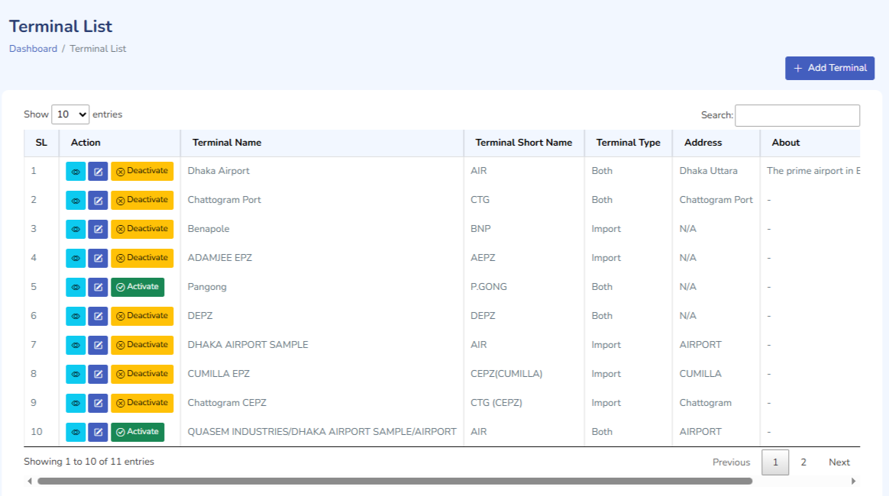 Terminals Table: Displays all terminals in a structured table format with actionable controls.- SL: Serial number for each terminal entry.
- Action: Edit, view, or delete terminal entries.
- Terminal Name: Full name of the terminal.
- Terminal Short Name: Abbreviated name or code for the terminal.
- Terminal Type: Indicates whether the terminal is export or import type.
- Address: Physical location or address of the terminal.
- About: Additional notes or description about the terminal.
- Status: Shows whether the terminal is active or inactive.
Terminal Overview – Creation Page
The Terminal Overview – Creation Page allows administrators to add new terminals to the system, enabling smooth management of operational locations across regions. This page is designed to make terminal creation quick and intuitive.
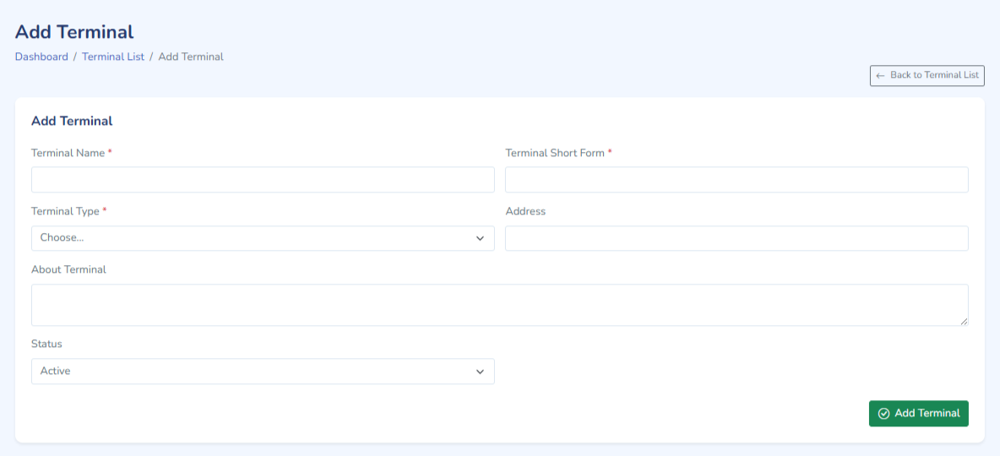The main content of this page is a form used to create a new terminal. Administrators can fill in details such as the terminal name, short name, type (export, import or both.), address, and additional notes. Once submitted, the new terminal is automatically added to the Terminal Overview – List Page for further management.
Expense Fields
The Terminal Expense List page provides a comprehensive overview of expenses associated with each terminal. Key details such as the terminal name, expense type, and the user responsible for recording the entry are highlighted. Administrators can easily review, track, and manage these expenses directly from the table.
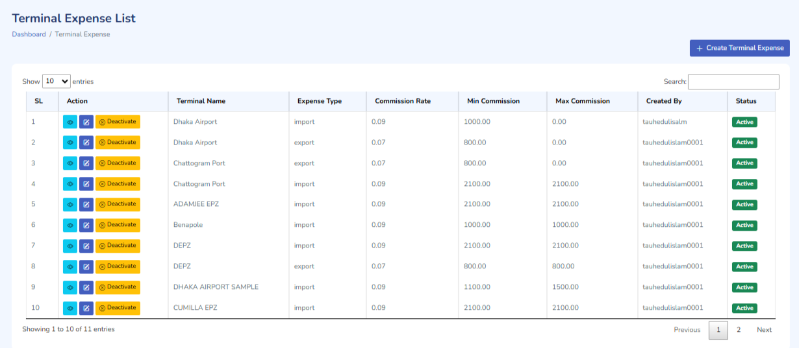The table contains the following columns, each representing specific details about terminal expenses:
- SL: Serial number of each entry for easy reference.
- Action: Options to edit, view, or delete a terminal expense entry.
- Terminal Name: The name of the terminal where the expense is recorded.
- Expense Type: The category or type of expense associated with the terminal, e.g., export or import.
- Commission Rate: The percentage of commission applied for this expense type.
- Min Commission: The minimum commission amount that can be applied.
- Max Commission: The maximum commission amount that can be applied.
- Created By: Name of the user who added or recorded this expense entry.
- Status: Current status of the expense entry, e.g., active or inactive.
Create Expense Page
This page lets administrators efficiently add new terminal expense entries by specifying details such as expense type, commission rate, and limits. Admins can also directly add new job expense fields from the Create Expense page as well.
Parties
In the C&F business, parties refer to the clients for whom goods are handled, whether for import, export, or domestic shipments.parties are the central part of business operations.
Party Overview – List Page
The Party Overview – List Page displays all parties in a structured table format, allowing administrators to view and manage client information efficiently. Administrators can navigate through multiple entries using pagination controls and quickly locate specific parties using the search feature. The page also allows selecting the number of entries displayed per page.
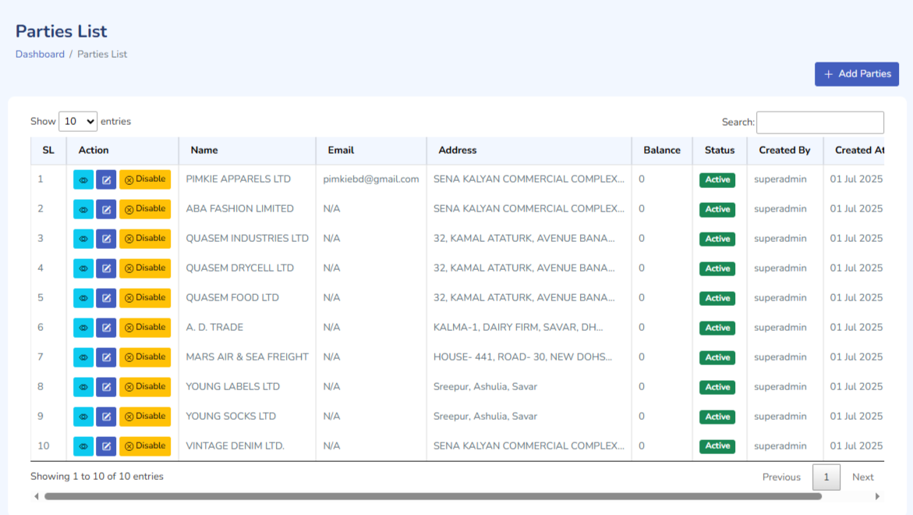The table includes columns for SL, Action, Name, Email, Address, Balance, Status, Created By, and Created At.
Parties Table: Displays all parties in a structured table format with actionable controls.- SL: Serial number for each party entry.
- Action: Edit, view, or delete party entries.
- Name: Full name of the party or client.
- Email: Contact email for the party.
- Address: Physical or billing address of the party.
- Balance: Current account balance for the party.
- Status: Indicates whether the party is active or inactive.
- Created By: Administrator who added the party to the system.
- Created At: Date and time when the party was created.
Party Overview – Creation Page
The Party Overview – Creation Page allows administrators to add new parties to the system, enabling efficient client management and assignment of employees to terminals. This page is designed to make party creation straightforward and intuitive.
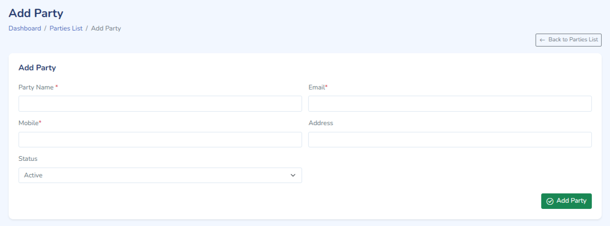The main content of this page is a form used to create a new party. Administrators can fill in details such as the party name, email, address, initial balance, and additional notes. Once submitted, the new party is automatically added to the Party Overview – List Page for further management and tracking.
Job Lists
The Job List page allows administrators to create and manage tasks that can be assigned to employees. It provides a centralized view of all jobs, their status, and assigned employees.
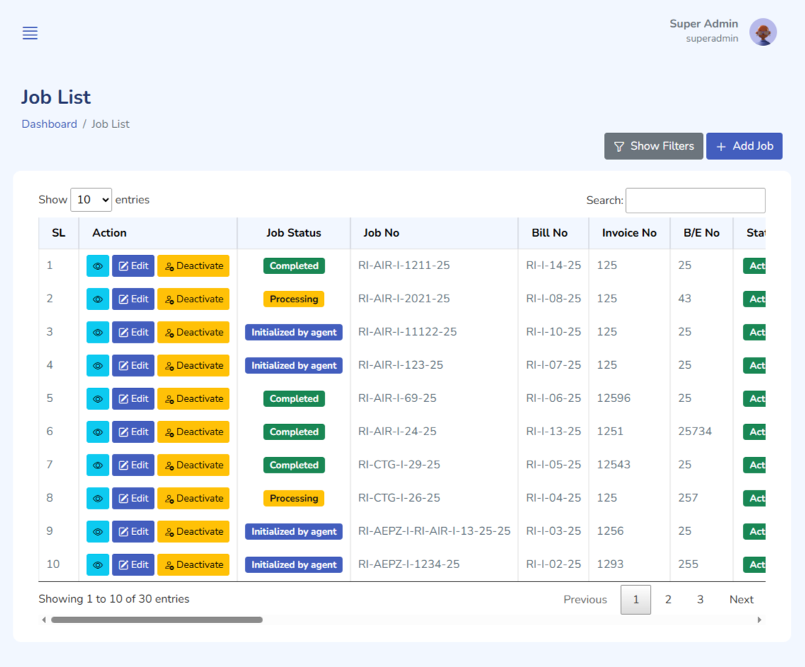The Job List table provides a comprehensive view of all jobs, offering pagination, search functionality, and the option to select the number of entries displayed. This allows administrators to effectively monitor, filter, and manage job records.
- SL: Serial number indicating the order of each job in the table.
- Action: Options to view, edit, or delete the job entry.
- Job Status: Current status of the job, such as pending, in progress, or completed.
- Job No: Unique identifier assigned to each job for reference.
- Bill No: Number associated with the billing document for the job.
- Invoice No: Invoice number linked to the job for accounting purposes.
- B/E No: Bill of Entry number relevant to import/export jobs.
- Status: Overall status of the job including approval or verification stages.
- Type: Category or type of job, such as import, export or local.
- Party Name: Name of the client, vendor, or associated party for the job.
- Employee Name: Name of the employee assigned to the job.
- Terminal: The terminal or location where the job is processed.
- Total Job Expense: Total costs incurred to complete the job.
- VAT: Value-added tax applicable to the job.
- Commission: Commission earned by the employee or agent for this job.
- Total Bill Amount: Final billed amount including expenses, VAT, and commission.
- Job Profit: Profit generated from the job after deducting costs.
- Remarks: Additional notes or comments regarding the job.
- Bill Date: Date when the bill for the job was generated.
- Updated By: Name of the administrator or employee who last modified the job.
- Last Update: Date and time when the job record was last updated.
- Create Date: Date when the job was initially created in the system.
The filter option allows administrators to quickly narrow down jobs based on key criteria, including Employee, Party, Terminal, Job Type, and Job Status. Additionally, jobs can be filtered by a date range using the From Date and To Date fields. This functionality helps streamline job management and locate specific records efficiently.
Clicking the Create Job button allows administrators to add a new job.
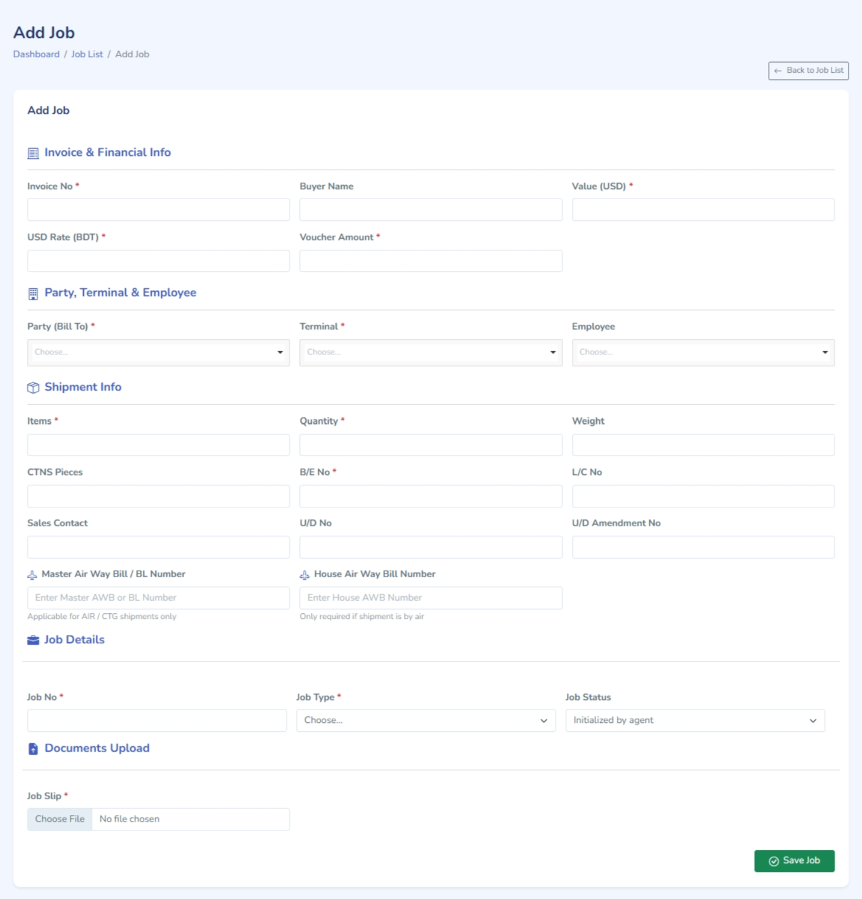Add Jobs
On the Add Job page, administrators can create new jobs by completing the provided form. The form captures all relevant details such as job type, assigned employee, terminal, and associated parties. Once submitted, the job is added to the Job List for tracking and management.
Bills Management
Bill Management refers to the process of creating, organizing, and tracking all bills generated for completed jobs. These bills are financial records created for jobs assigned to employees and completed for specific parties (clients), documenting services provided, charges, and responsible employees. Bill Management provides administrators with tools to modify, print, and manage bills efficiently.
BIll Register
The Bill Register page features a comprehensive table displaying all generated bills, equipped with search functionality, pagination, and an option to set the number of entries shown per page.
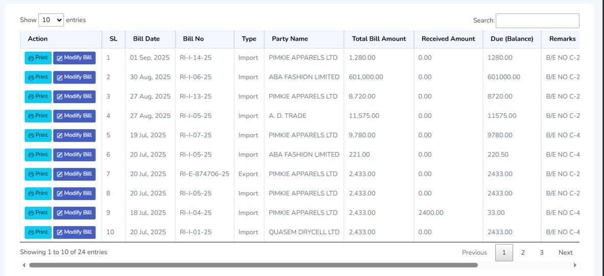The table contains the following columns, each representing specific billing details:
- Action: Provides options to print or modify existing bills.
- SL: Serial number of each bill entry for easy reference.
- Bill Date: The date when the bill was created or issued.
- Bill No: Unique identification number assigned to each bill.
- Type: Specifies the type or category of the bill.
- Party Name: The name of the client (party) for whom the bill was generated.
- Total Bill Amount: The total amount charged for the completed job.
- Received Amount: The amount that has been paid or received against the bill.
- Due (Balance): The remaining unpaid balance on the bill.
- Remarks: Additional notes or comments related to the bill.
The Action column plays a crucial role, allowing administrators to print bills directly or modify existing records when updates or corrections are needed. This ensures efficient bill management and up-to-date financial accuracy.

Clicking the Modify Bill button redirects users to the Bill Modify Page, where existing bill details can be reviewed and updated as necessary. On this page, administrators can also add new expense fields, allowing for greater flexibility in managing and refining billing information.

Clicking the Print Bill button redirects users to a dedicated Bill Preview Page, where the selected bill is displayed in a structured document format. From this page, administrators can easily download the bill as a PDF file for record-keeping, sharing, or printing purposes.
Bill Statement
The Bill Statement page provides a categorized and summarized view of bills, grouping them under their respective parties (clients). It allows administrators to review, filter, and manage multiple job-related bills in one place. The page includes advanced filter options and organized presentation for quick access to grouped billing data.
The table contains the following columns, each representing key information for grouped billing statements:
- SL: Serial number for each statement entry.
- Action: Provides options to print statements or view detailed job records under a party.
- Status: Displays the current processing or completion status of the statement.
- Party Name: The name of the client (party) whose grouped job bills are recorded.
- Job Number: The unique identification number of the associated job(s).
- Total Amount: The total billed amount for all jobs under the selected party.
- Start: Indicates the start date of the job period included in the statement.
- End: Indicates the end date of the job period included in the statement.
- Job Type: Specifies the type or category of jobs covered in the statement.
- Created Date: The date when the statement was generated or recorded.
The Action column on this page provides multiple utilities — administrators can print individual statements or print all bills recorded under a specific party in a single batch. Additionally, users can view all job records listed under a particular party category in a structured table format for better review and verification.
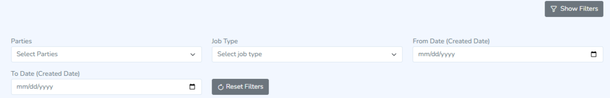The Bill Statement page also includes a powerful Filter Option to streamline data viewing. Filters allow administrators to narrow down records based on selected Parties, Job Types, and Created Date ranges (using “From Date” and “To Date”). This ensures precise data retrieval and efficient statement management.
Difference Between Bill Register and Bill Statement
The Bill Register displays all bills individually, allowing for detailed inspection and printing of each separate bill. In contrast, the Bill Statement consolidates bills under their respective parties (clients), enabling grouped viewing and bulk printing. In summary, the Register page focuses on individual job-level billing records, while the Statement page emphasizes party-level billing summaries.
Accounting Records
The Accounts Records section provides a complete view of the company's financial activities, including the Bank Account, client and employee accounts, and detailed Charts of Accounts. Separate pages for Income and Expenses allow focused tracking of individual transactions. It also maintains Cashbook entries and Commissions Records for all clients. Key financial metrics such as Total Commission, Total Job Expense, Total Voucher, Total VAT, Total Audit Amount, Total Bill Amount, and Total Profit are clearly displayed for quick reference.
Bank Accounts
The Bank Accounts section lists all accounts held in the company's own name. Each account includes essential details such as the bank name, branch, and account information. This page provides a clear overview of the company's personal accounts for easy monitoring and management.

The Bank Accounts page displays all company bank accounts in a tabular format, equipped with search and pagination features, along with an option to select the number of entries per page for easy navigation and management.
The table contains the following columns, each providing specific details about the company's bank accounts:
- SL: Serial number for easy reference of each entry.
- Action: Options to edit and disable/enable the bank account record.
- Bank Name: Name of the bank where the account is held.
- Branch Name: Specific branch of the bank for this account.
- Account Name: Official name associated with the bank account.
- Status: Indicates whether the account is active or inactive.
- Create Date: Date when the bank account record was created in the system.
Creating New Bank Accounts
There is an option to add new bank accounts directly from the Bank Accounts page for easy management of company finance Profiles.

After clicking the Add Bank button, you are redirected to a page containing a form to add a new account. The form includes the following fields:
- Add Bank: Page header indicating the purpose of the form.
- Bank Name *: Field to enter the name of the bank (required).
- Bank Branch Name *: Field to specify the branch of the bank (required).
- Bank Account Name *: Field to enter the official name of the bank account (required).
Accounts Lists
The Accounts List section provides a centralized view of all employee and party accounts, making it easy to monitor balances, track account activity, and manage financial relationships efficiently. The table is designed for smooth navigation with search and pagination features, allowing users to quickly find and review any account while controlling how many entries are displayed per page.

The table contains the following columns, each providing key information:
- SL: Serial number for quick reference of each entry.
- Action: Options to edit account details.
- Account Name: Name of the employee or party holding the account.
- Account Type: Indicates whether the account belongs to an Employee or a Party.
- Main Balance: Current balance in the account.
- Status: Shows if the account is active or inactive.
- Create Date: Date when the account was created in the system.
Edit Accounts

Clicking the Edit button redirects you to a page where account details can be updated through a form. The form allows modification of key information to ensure accounts remain accurate and up-to-date.
- Account Type: Field to update whether the account belongs to an Employee or a Party.
- Account Name: Field to edit the name of the account holder.
- Main Balance: Field to update the current balance of the account.
Add Accounts

The Accounts List page includes an Add Account button to create new accounts. Clicking this button redirects to a form page where new accounts can be added easily, ensuring proper record-keeping for both employees and parties.
- Account Type: Field to select the type of account (e.g., Employee Account).
- Employee Name *: Required field to select the employee for whom the account is being created.
- Main Balance *: Required field to specify the initial balance of the account.
Chart of Accounts
The Chart of Accounts page provides administrators with a structured overview of the company’s financial transactions, categorizing each transaction by its type. This organization enables administrators to quickly understand the flow of income and expenses, identify patterns, and maintain a clear hierarchy of financial records. By systematically grouping transactions, it ensures that all financial activities are transparent, easy to manage, and readily available for accurate reporting, auditing, and strategic decision-making.
The Chart of Accounts displays all financial transactions of the company in a structured table, categorizing them by type for easy reference. The table includes search and pagination features, along with an option to select the number of entries per page, allowing administrators to quickly navigate and manage large volumes of transactions.

Each row in the table represents a transaction, and the columns provide essential details for administrators to monitor and manage accounts efficiently.
- SL: Serial number for each transaction for easy reference.
- Transaction Name: The name of the transaction, describing its purpose or category.
- Transaction Type: Categorizes the transaction as income, expense, or other relevant type.
- Status: Indicates whether the transaction is active or inactive.
- Create Date: The date and time when the transaction was recorded in the system.
Edit Transections

Clicking the Edit button in the Actions column allows administrators to modify a transaction’s details. This includes the ability to change the Transaction Type, switching it between Income and Expense, ensuring that all records remain accurate and up-to-date for proper financial management.
Add New Transections

The Add Chart of Account option enables administrators to create new transactions and assign them the appropriate type. This feature ensures that all financial activities are correctly categorized from the start, helping maintain a well-organized and accurate record of the company’s accounts.
New Income
The New Income page provides a centralized interface for viewing and managing all transactions classified as Income. This page allows administrators to track incoming payments from clients, parties, or other sources, ensuring accurate recording of all revenue-related activities.
The page displays all income transactions in a table equipped with standard features such as search, pagination, and the option to select the number of entries per page. This setup ensures easy navigation and management of large volumes of income records.

Each row in the table represents a single income transaction, and the columns provide detailed information for administrators to monitor, track, and manage transactions efficiently.
- SL: Serial number of the transaction for quick reference.
- Action: Options to edit or manage the transaction.
- PV NO: Payment Voucher number associated with the transaction.
- User Type: Indicates whether the transaction is associated with a Party or an Employee.
- Party Name: Name of the client or party involved in the transaction.
- Party Mobile: Contact mobile number of the party.
- Party Email: Email address of the party.
- Employee Name: Name of the employee involved in the transaction.
- Employee Mobile: Contact mobile number of the employee.
- Employee Branch: Branch where the employee is assigned.
- Other Name: Any additional associated name relevant to the transaction.
- Transaction Date: Date when the transaction occurred.
- Transaction Type: Confirms the transaction type as Income.
- Bank Name: Bank associated with the transaction.
- Branch Name: Specific branch of the bank.
- Account Name: Bank account involved in the transaction.
- Chart of Account Name: Category under which the transaction is recorded.
- Chart of Account Type: Type of chart account (e.g., Income).
- Amount: Total amount of the income transaction.
- Description: Notes or details about the transaction.
- Status: Indicates whether the transaction is active or inactive.
- Created Date: Date when the transaction record was created in the system.
Edit New Income

The Edit Income page allows administrators to modify existing income transactions with a dynamic form that adjusts based on selected options. If the User Type is set to Party, the form includes a field to select the party name, whereas selecting Employee displays an employee selection field. Similarly, if the Transaction Type is Bank, additional fields for bank name, branch, and account appear; selecting Cash removes these bank-related fields. This dynamic behavior ensures that only relevant information is displayed and required, helping maintain accurate and consistent income records while simplifying the editing process.
Add New Income

The Add Income page is designed to register new income transactions using a form that intelligently adjusts based on the selected options. Choosing User Type as Other will display an Other Name field, while selecting Party or Employee reveals their respective selection fields. The Cash/Bank Account selection also adapts dynamically; selecting Bank provides fields for bank name, branch, and account, whereas selecting Cash simplifies the form by hiding these fields. This dynamic design ensures that users only see and fill in the fields relevant to the transaction, streamlining the process and maintaining accurate income records.
New Expense
The New Expense page provides a centralized interface for viewing and managing all transactions classified as Expense. Administrators can use this page to monitor outgoing payments to parties, employees, or other sources, ensuring accurate recording of all expenditure-related activities.
All expense transactions are displayed in a table with standard features such as search, pagination, and the option to select the number of entries per page. This layout allows easy navigation and efficient management of large volumes of expense records.

Each row in the table represents a single expense transaction, and the columns provide detailed information for administrators to track, manage, and audit transactions effectively.
- SL: Serial number of the transaction for quick reference.
- Action: Options to edit or manage the transaction.
- PV NO: Payment Voucher number associated with the transaction.
- User Type: Indicates whether the transaction involves a Party or an Employee.
- Party Name: Name of the client or party receiving the payment.
- Party Mobile: Contact mobile number of the party.
- Party Email: Email address of the party.
- Employee Name: Name of the employee associated with the transaction.
- Employee Mobile: Contact mobile number of the employee.
- Employee Branch: Branch where the employee is assigned.
- Other Name: Any additional associated name relevant to the transaction.
- Transaction Date: Date when the transaction occurred.
- Transaction Type: Confirms the transaction type as Expense.
- Bank Name: Bank used for the transaction, if applicable.
- Branch Name: Specific bank branch, if applicable.
- Account Name: Bank account involved in the expense.
- Chart of Account Name: Category under which the expense is recorded.
- Chart of Account Type: Type of chart account (e.g., Expense).
- Amount: Total amount of the expense transaction.
- Description: Notes or details about the transaction.
- Status: Indicates whether the transaction is active or inactive.
- Created Date: Date when the expense record was created in the system.
Edit Expense

The Edit Expense page allows administrators to modify existing expense transactions using a dynamic form that adapts based on selected options. Selecting User Type as Party displays a party selection field, while choosing Employee shows an employee selection field. Similarly, if the Transaction Type is Bank, fields for bank name, branch, and account appear; selecting Cash hides these fields. This dynamic behavior ensures that only relevant information is shown, maintaining accurate expense records and simplifying the editing process.
Add New Expense

The Add Expense page enables administrators to record new expense transactions through a dynamically adjusting form. Choosing User Type as Other displays an Other Name field, while selecting Party or Employee reveals their respective selection fields. The Cash/Bank Account selection adapts based on the choice: selecting Bank provides fields for bank, branch, and account, whereas Cash simplifies the form by hiding these fields. This ensures that users only enter relevant information, streamlining the process and maintaining precise records of all expense transactions.
Cashbook
The Cashbook page provides an overall summary of the company's cash position, presenting a high-level view of cash inflows and outflows over a selected period. It highlights key financial metrics such as the Opening Balance, Closing Balance, and total amounts in cash and bank accounts, giving administrators a clear snapshot of the company's overall cash status without displaying every individual transaction. ensuring continuity in cash tracking and providing an accurate starting point for monitoring the new period
Traditional Cashbook Chart
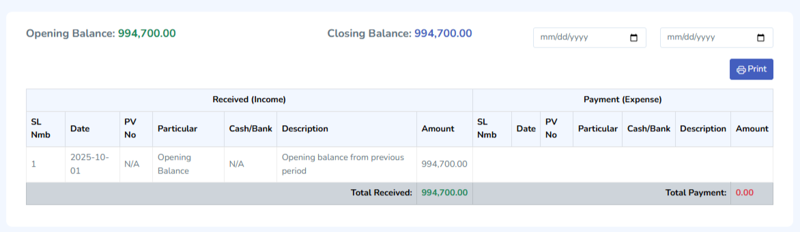The first chart follows the traditional accounting cashbook format, summarizing cash received (income) and cash paid (expenses) side by side. The Received (Income) section shows totals for cash inflows including the opening balance, while the Payment (Expense) section presents totals for cash outflows. Each section includes essential columns such as SL Number, Date, PV No, Particulars, Cash/Bank, Description, and Amount. The totals provide a quick understanding of net cash movement over the period.
Custom Cashbook Summary
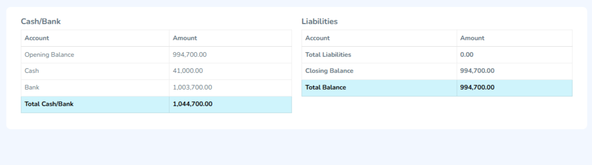The second chart provides a consolidated overview of the company's cash position, showing balances across different accounts including cash, bank, and opening balance, as well as total liabilities. It calculates the Closing Balance and Total Balance, offering a clear, high-level snapshot of the overall cash availability and financial status for decision-making purposes.
Commissions
The Commissions page provides a complete overview of all commission-based transactions recorded within the company. It brings together every commission entry — whether it originates from income or expense, involves a party, employee, or terminal, or is related to export or import operations — into one consolidated interface. This page serves as a reliable reference for administrators to assess performance, analyze profitability, and maintain transparency in financial operations.
Commission Summary
At the top of the page, a section titled Commission Summary displays a set of well-designed cards that highlight the organization’s key financial indicators. These summary cards allow users to quickly evaluate the company’s commission and billing performance at a glance, offering a snapshot of profitability and total job expenses without needing to review detailed records.
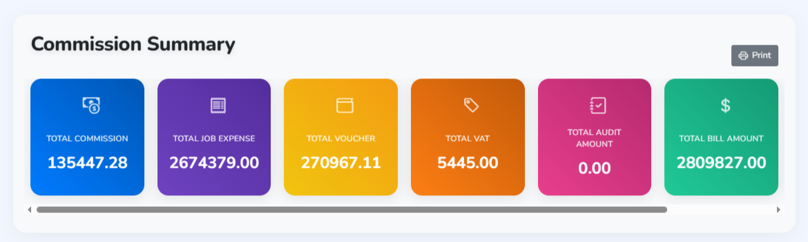Each card represents a distinct financial metric that contributes to the overall commission analysis and helps management assess the company’s operational efficiency. The summary cards include the following details:
- Total Commission: Displays the total accumulated commission amount earned across all recorded transactions.
- Total Job Expense: Represents the combined cost of all completed jobs during the recorded period.
- Total Voucher: Indicates the overall value of vouchers associated with the commission entries.
- Total VAT: Shows the total Value-Added Tax amount applied to all transactions.
- Total Audit Amount: Displays the total amount found during audit assessments.
- Total Bill Amount: Reflects the total billed value from all recorded jobs.
- Total Profit: Shows the overall net profit after all deductions, expenses, and applicable taxes.

The Commission Summary section also includes an option to print the entire summary at once, allowing administrators to generate a complete overview of all key financial metrics in a single document. This feature is particularly useful for reporting, record-keeping, or quick presentation of overall commission performance.
Commission Records Table
Below the summary section, a detailed Commission Records Table provides an in-depth view of every individual commission transaction. This tabular format allows administrators to review, track, and manage all commission-related activities efficiently, offering transparency and traceability for every financial record.
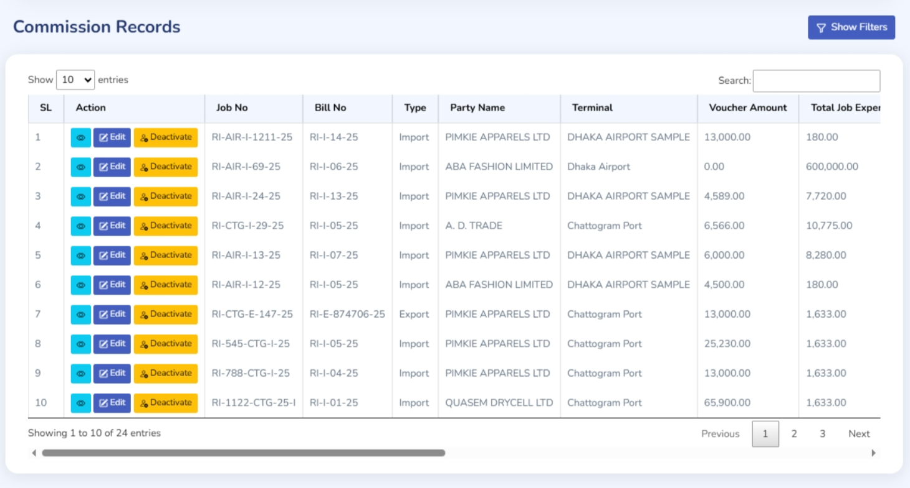The table includes standard interactive features such as search, pagination, and adjustable entries per page. Each column is designed to capture critical details about the commission transaction, ensuring that every financial movement is accurately documented and easily accessible.
- SL: Serial number of the transaction for quick identification.
- Action: Provides available options to view, edit, or manage the record.
- Job No: Unique job identification number linked with the commission.
- Bill No: Bill number corresponding to the specific commission transaction.
- Type: Indicates whether the commission is tied to an expense or income entry.
- Party Name: The name of the client or party involved in the commission transaction.
- Terminal: Identifies the terminal or point of transaction associated with the record.
- Voucher Amount: Displays the total value of the voucher related to the job.
- Total Job Expense: Shows the total expenditure incurred for the associated job.
- VAT: Indicates the total Value-Added Tax applied to the transaction.
- Commission: Displays the commission amount earned or allocated from the job.
- Total Bill Amount: Represents the total billed value for the recorded job.
- Job Profit: Displays the final profit generated after deducting all costs and taxes.
- Remarks: Any additional notes or details related to the commission transaction.
- Bill Date: The date on which the related bill was generated.
- Last Update: Indicates the most recent modification date for the record.
- Create Date: The original date when the commission entry was added to the system.
The Edit option in the Actions column allows administrators to review and modify existing commission records as needed. Through this feature, users can correct data, update financial details, or refine transaction information to ensure complete accuracy. Additionally, the edit page includes an option at the bottom to add new terminal expense fields directly, enabling seamless expansion or adjustment of terminal-related expenses without leaving the page.
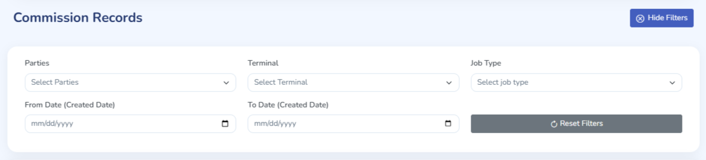The Commission Records page features a filter panel that allows users to quickly locate specific commission entries. By selecting criteria such as party, terminal, job type, or date range, administrators can narrow down results for faster access and clearer analysis of commission data.
- Parties: Filter transactions linked to a specific party or client.
- Terminal: View commissions associated with a particular terminal.
- Job Type: Filter records by the nature or category of the job.
- From Date (Created Date): Define the starting date for record retrieval.
- To Date (Created Date): Define the ending date for record retrieval.
Reports & Analytics
The Reports & Analytics section provides detailed insights into the company’s financial activities. It allows administrators to review, analyze, and track various financial reports for informed decision-making. This section ensures clear visibility into business performance and profitability.
Proft & Loss
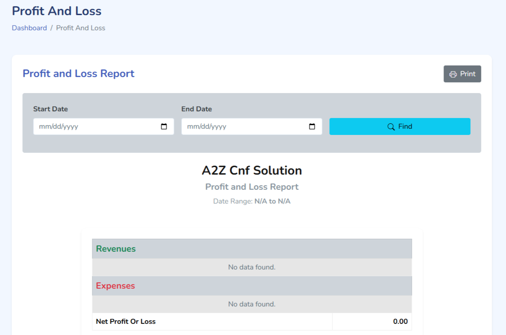The Profit & Loss page allows administrators to calculate the company’s financial performance within a selected date range using the From Date and To Date fields. Administrators can input or review revenue and expense details to determine overall profit or loss. An account chart then visually summarizes these figures for clearer financial analysis.
- Revenues — Recorded from various income sources within the system.
- Expenses — Entered or reviewed by administrators to reflect operational costs.
- Net Profit or Loss — Automatically calculated based on total revenues and expenses.
All Profits
The Ledger Reports section provides a comprehensive financial record of all monetary transactions conducted across various accounts and entities within the organization. Each ledger serves as a detailed statement of specific financial activities, ensuring accurate tracking, auditing, and reconciliation of funds.Administrators can generate each ledger report in multiple formats, including PDF and Excel, or print them directly from the system.
Cash Ledger
The Cash Ledger acts as the organization’s primary reference for recording all cash-based transactions. It lists every inflow and outflow in chronological order, allowing real-time visibility over liquidity conditions. With accurate and consistent entries, this ledger enhances financial accountability and provides a clear overview of the company’s operational cash movements.
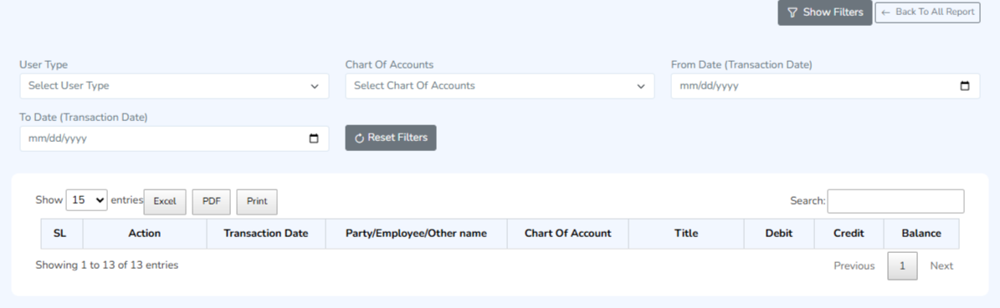The Cash Ledger includes useful tools such as pagination, search filters, and entry count controls for seamless data handling. Users can instantly export reports in Excel or PDF format or print them for internal review. Flexible filter settings such as User Type (Employee, Party, or Other), Chart of Accounts, and Date Range provide targeted access to relevant records for detailed analysis.
Every entry in the Cash Ledger outlines crucial information — including transaction purpose, amount, and the involved parties — offering a complete and transparent breakdown of the organization’s cash flow. The interface combines summary and detailed data for a well-structured and efficient review process.
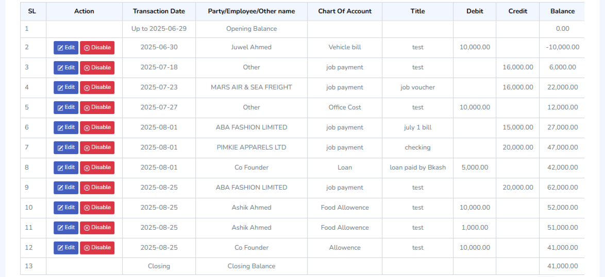The table columns record the key financial details for each cash transaction.
- SL: A unique identifier assigned to every transaction entry.
- Action: Buttons to view, modify, or print specific records.
- Transaction Date: Specifies when the transaction was carried out.
- Party/Employee/Other Name: Identifies the entity or individual involved.
- Chart of Account: Defines the category of the transaction.
- Title: A concise description of the payment purpose.
- Debit: Displays the outgoing cash amount.
- Credit: Displays the incoming cash amount.
- Balance: The running total after each cash transaction.
The Employee Ledger uses a continuous debit-credit system that recalculates balances with each entry. This provides a precise view of every employee’s financial transactions. The closing balance for one month automatically becomes the opening balance for the next, maintaining a smooth and uninterrupted accounting flow.
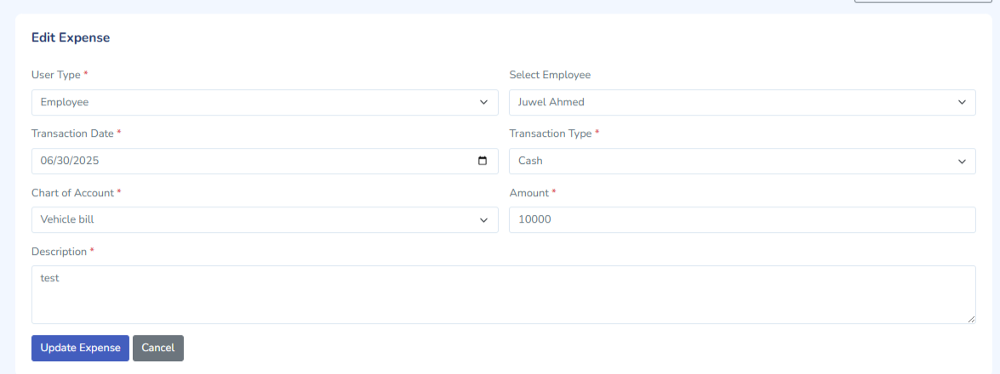The Edit function in the Action column enables real-time record updates. Its responsive form structure adapts based on the transaction type selected, ensuring accurate data entry and maintaining consistency across all records.
Bank Ledger
The Bank Ledger tracks all financial activities processed through organizational bank accounts. It provides an ordered record of deposits, withdrawals, and transfers, helping administrators manage and reconcile all bank-related operations effectively.
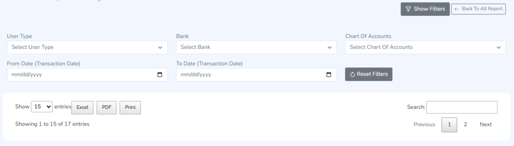The table offers several management tools, including pagination, search filters, and adjustable entry views. Users can print or export reports as PDF and Excel documents. Built-in filters — such as User Type, Chart of Accounts, and Date Range — ensure quick access to specific banking data.
Each record in this ledger provides a transparent summary of bank transactions, detailing every deposit and withdrawal. It supports clear reconciliation with official bank statements, minimizing financial discrepancies.
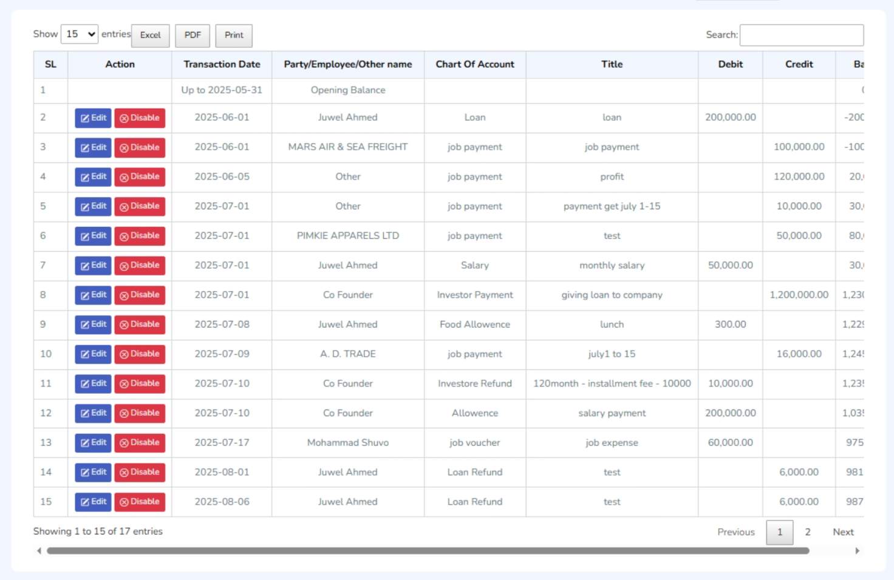The columns in the Bank Ledger are structured to clearly represent every banking activity.
- SL: Sequential number for reference.
- Action: Access tools for viewing, editing, or printing the entry.
- Transaction Date: Specifies when the banking transaction occurred.
- Party/Employee/Other Name: Identifies the connected individual or entity.
- Chart of Account: Categorizes the purpose of the transaction.
- Title: Short label summarizing the operation.
- Debit: Reflects funds withdrawn from the bank.
- Credit: Reflects funds deposited into the bank.
- Balance: Displays the running total after each transaction.
The Employee Ledger follows a real-time debit-credit model, recalculating the total after each activity. Monthly closing balances automatically transition into the next month’s opening balance, ensuring continuous financial alignment between reporting periods.
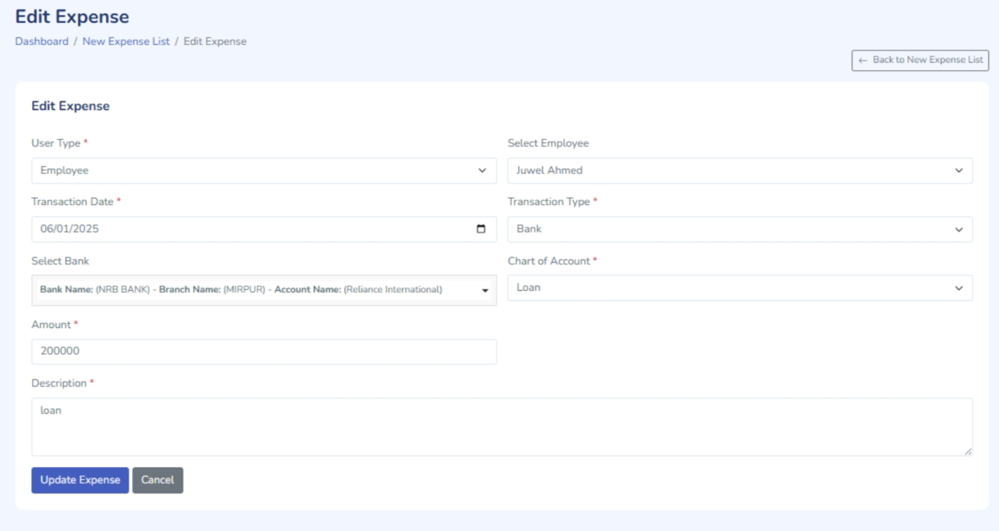The Edit function presents a responsive interface that dynamically adapts fields based on transaction context, allowing precise updates to bank data with complete traceability.
Party Ledger
The Party Ledger consolidates financial interactions with third-party entities including clients, vendors, and business partners. It helps track credit, debit, and outstanding amounts to maintain transparent financial relationships and streamlined settlements.
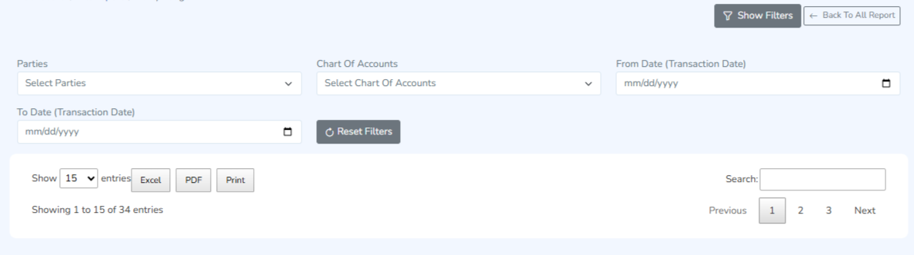Featuring interactive navigation tools such as pagination, search filters, and entry controls, this ledger ensures efficient data management. Reports can be generated in PDF or Excel formats or printed as needed. Filters like User Type, Chart of Accounts, and Date Range refine searches for accuracy and relevance.
Each record displays detailed transaction information with respective parties, clarifying pending balances and payment statuses to ensure consistent financial oversight.
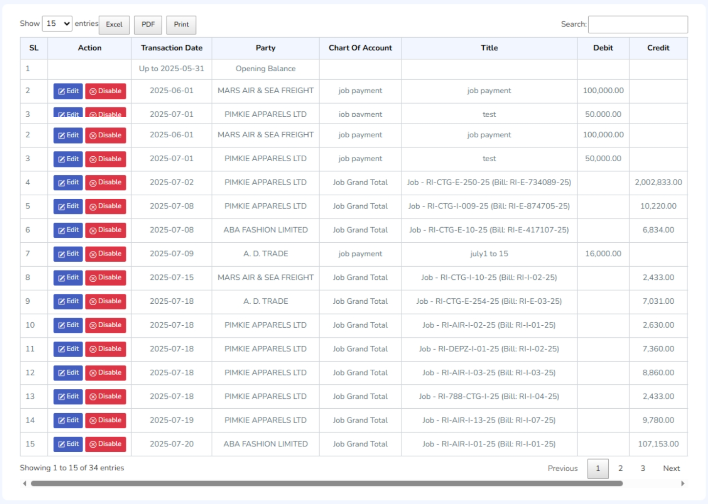The Party Ledger table includes organized columns for clear data representation.
- SL: Serial transaction reference.
- Action: Enables viewing, editing, or printing a record.
- Transaction Date: When the exchange occurred.
- Party/Employee/Other Name: Identifies the involved party.
- Chart of Account: Classifies the transaction (e.g., invoice, payment, or adjustment).
- Title: Descriptive summary of the transaction.
- Debit: Outgoing payments to the party.
- Credit: Incoming payments from the party.
- Balance: Displays the current financial position for the party.
This ledger automatically maintains a net balance for each party as new entries are logged, helping track pending dues and collections efficiently.
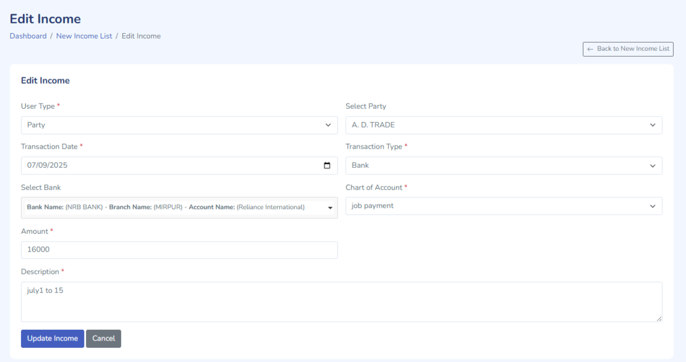Using the Edit feature, users can adjust existing records. The adaptive design ensures the form aligns with transaction details for accurate modifications.
Employee Ledger
The Employee Ledger captures all financial activities involving staff members — including job payments, allowances, and reimbursements. It provides clarity over employee-related financial exchanges while supporting transparent recordkeeping.
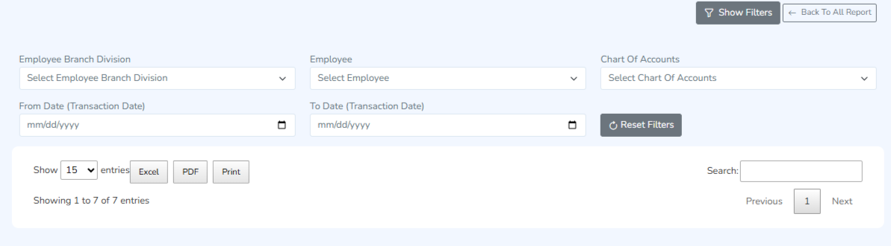Built-in tools such as pagination, search filters, and entry limits simplify navigation through extensive records. Reports can be exported in PDF or Excel or printed for documentation. Filters for User Type, Chart of Accounts, and Date Range make targeted reviews straightforward.
Each entry includes key details — employee name, transaction nature, debit or credit values, and balance adjustments — allowing comprehensive visibility of employee payments and deductions.
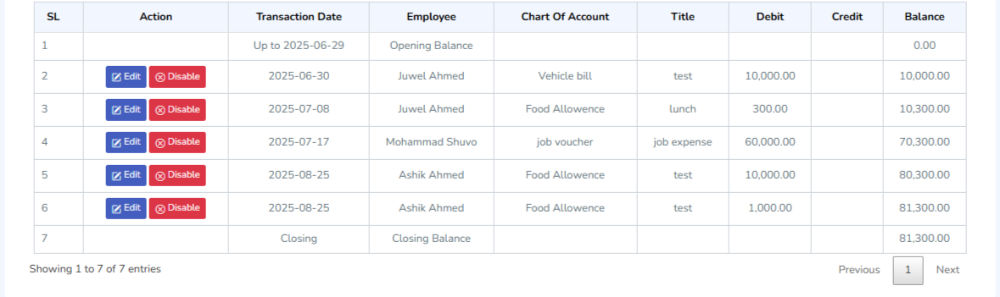The Employee Ledger table is formatted to present organized and transparent financial data.
- SL: Sequential record identifier.
- Action: Options to view, modify, or print entries.
- Transaction Date: Specifies when the transaction occurred.
- Party/Employee/Other Name: Identifies the employee concerned.
- Chart of Account: Categorizes by type (e.g., salary, reimbursement, or allowance).
- Title: Describes the purpose of the transaction.
- Debit: Displays amounts paid to the employee.
- Credit: Represents deductions or returns.
- Balance: Shows the updated account total after each record.
The Employee Ledger maintains a real-time debit-credit tracking process that continuously updates balances. The month-end closing balance automatically rolls over as the next month’s opening balance, ensuring continuous reporting accuracy.
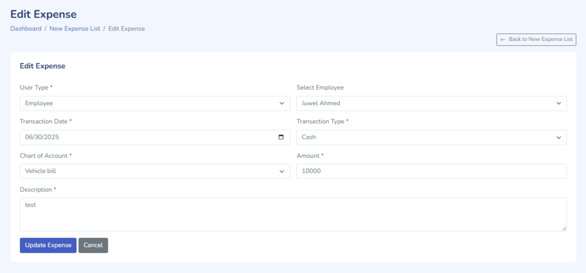The Edit function allows quick adjustments to employee transaction records. The form layout automatically adapts to the transaction type for efficient updates.
Salary Ledger
The Salary Ledger is dedicated to recording all salary-related transactions across the organization. It centralizes payment information, ensuring that payroll data remains accurate, traceable, and easily reviewable.
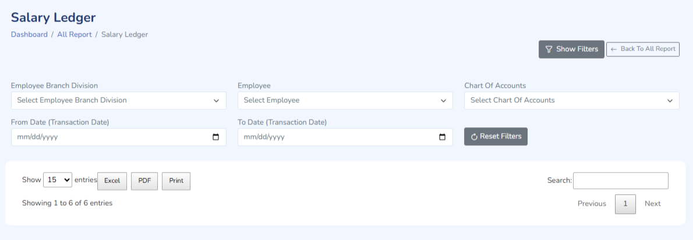Features such as pagination, search functionality, and entry count control streamline salary data management. Reports can be exported or printed for HR or auditing use. Filters like User Type, Chart of Accounts, and Date Range enable precise record selection.
Each record outlines payment date, employee, and corresponding debit or credit values, ensuring payroll consistency and easy reconciliation with financial reports.
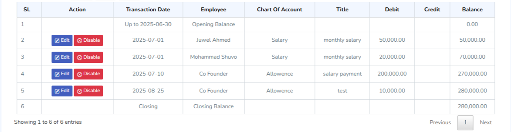The following columns organize payroll-related details for easy analysis:
- SL: Serial number for the salary transaction.
- Action: View, modify, or print salary records.
- Transaction Date: Date of payment or salary adjustment.
- Party/Employee/Other Name: Employee receiving payment.
- Chart of Account: Categorizes the transaction under payroll.
- Title: Short description of the payment or allowance.
- Debit: Salary disbursed to employees.
- Credit: Refunds or corrections applied.
- Balance: Updated payroll balance after the transaction.
The ledger maintains a rolling debit-credit balance system that updates automatically after each transaction. The closing fund balance of one month transitions into the opening balance of the next, preserving consistent payroll tracking.
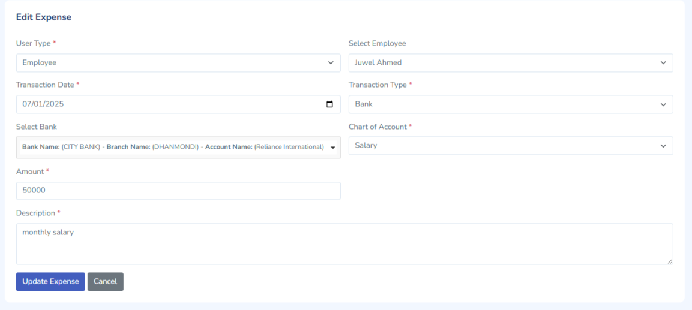The Edit button allows precise modification of salary data through adaptive forms that adjust to transaction criteria for accurate updates.
Loan Ledger
The Loan Ledger keeps detailed records of all loans issued and repaid by employees or third parties. It provides clarity on loan disbursements, repayments, and remaining balances, ensuring effective management of the organization’s lending operations.
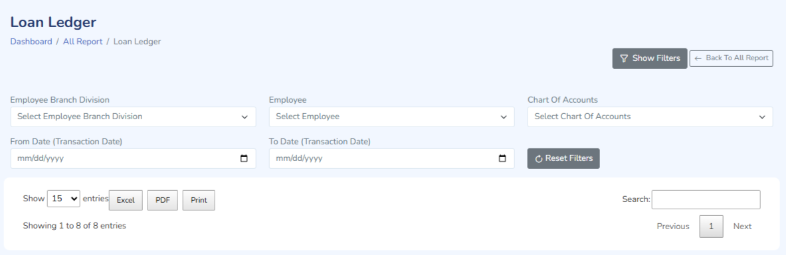Equipped with pagination, search, and export capabilities (PDF, Excel, or print), this ledger simplifies monitoring and reconciliation. Filters for User Type, Chart of Accounts, and Date Range help isolate records for focused analysis.
Each entry displays loan details such as issue amount, repayment data, and updated balances — ensuring full traceability of financial obligations.
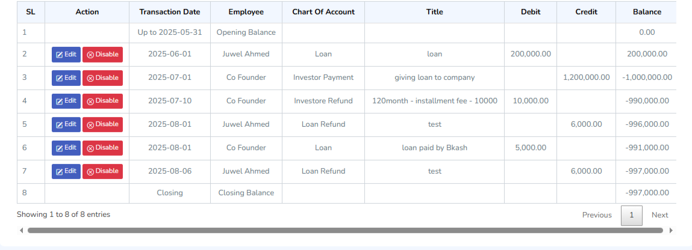The Loan Ledger table structures loan information clearly across essential fields.
- SL: Unique ID for each loan entry.
- Action: View, modify, or print transaction records.
- Transaction Date: Indicates when the loan transaction occurred.
- Party/Employee/Other Name: Identifies the borrower.
- Chart of Account: Classifies the loan category.
- Title: Brief note specifying loan issue or repayment.
- Debit: Represents loan amounts disbursed.
- Credit: Represents repayment amounts received.
- Balance: Displays remaining payable balance.
This ledger runs on a cumulative balance method that adjusts instantly with each debit or credit, maintaining accuracy and transparency across all records.
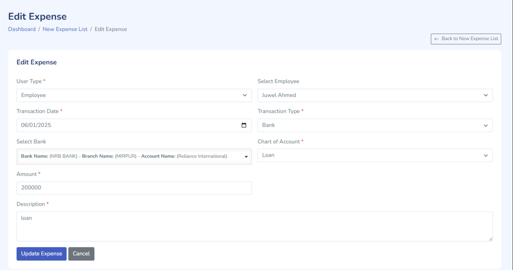The Edit option allows administrators to update loan records with ease. Its form adapts according to context, ensuring consistency in data entry and management.
Other Transaction Ledger
The Other Transaction Ledger logs miscellaneous financial operations that do not fit under employee or party categories. This includes unique expenditures, adjustments, or special costs, ensuring that all transactions — even irregular ones — are properly accounted for.
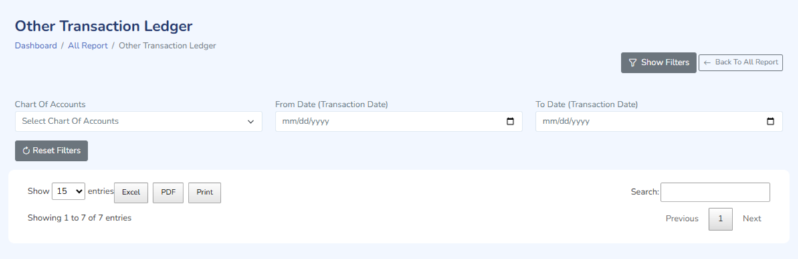With efficient search, pagination, and export features, this ledger ensures smooth record handling. Filters such as User Type, Chart of Accounts, and Date Range help locate specific records quickly.
Each transaction entry includes essential data like amount, purpose, and type. This ledger bridges the gap between categorized and exceptional financial records for complete coverage.
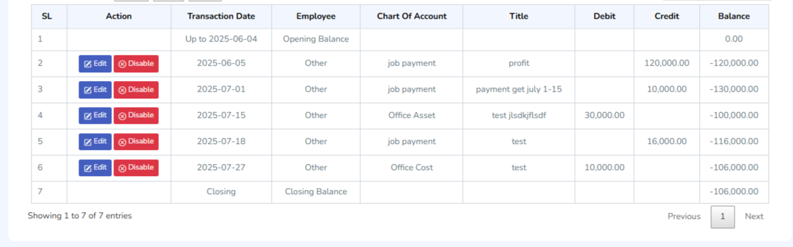The columns are designed for systematic recording of all other transaction details:
- SL: Sequential ID for reference.
- Action: View, modify, or manage entries.
- Transaction Date: Specifies when the record was made.
- Party/Employee/Other Name: Identifies the source or transaction category.
- Chart of Account: Defines the type of financial entry.
- Title: Short summary of the transaction purpose.
- Debit: Outgoing expenses or payments.
- Credit: Incoming funds or revenue.
- Balance: Displays cumulative standing after each entry.
The ledger maintains a continuous debit-credit balance mechanism that keeps data updated in real time. Monthly closing figures are carried over automatically to ensure consistent reporting.
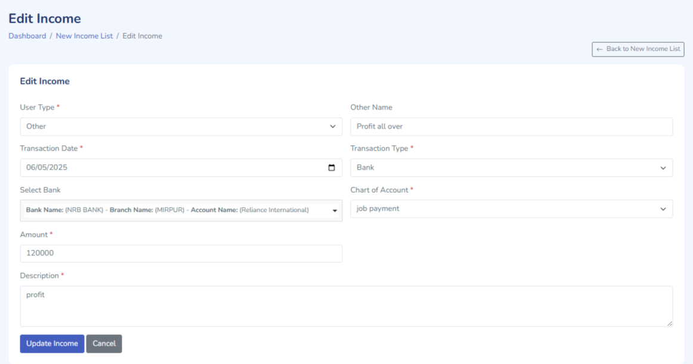The Edit tool enables administrators to adjust existing records. The form dynamically adapts to match transaction context, making editing smooth and controlled.
Daily Transaction Ledger
The Daily Transaction Ledger compiles a day-wise summary of all financial activities across every ledger in the system. It integrates records from cash, bank, employee, salary, loan, and other ledgers to offer a consolidated view of daily financial performance.
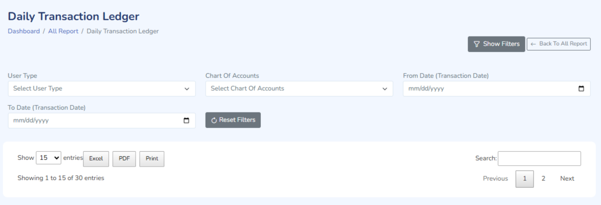Interactive elements like pagination, search, and customizable entry views allow effortless navigation through daily records. Reports can be printed or exported in PDF and Excel formats. Administrators can narrow results using filters such as User Type, Chart of Accounts, or Date Range.
The Daily Ledger unifies all monetary movements, showing both inflows and outflows across the system. It offers a real-time picture of the organization’s financial activity on any given day.
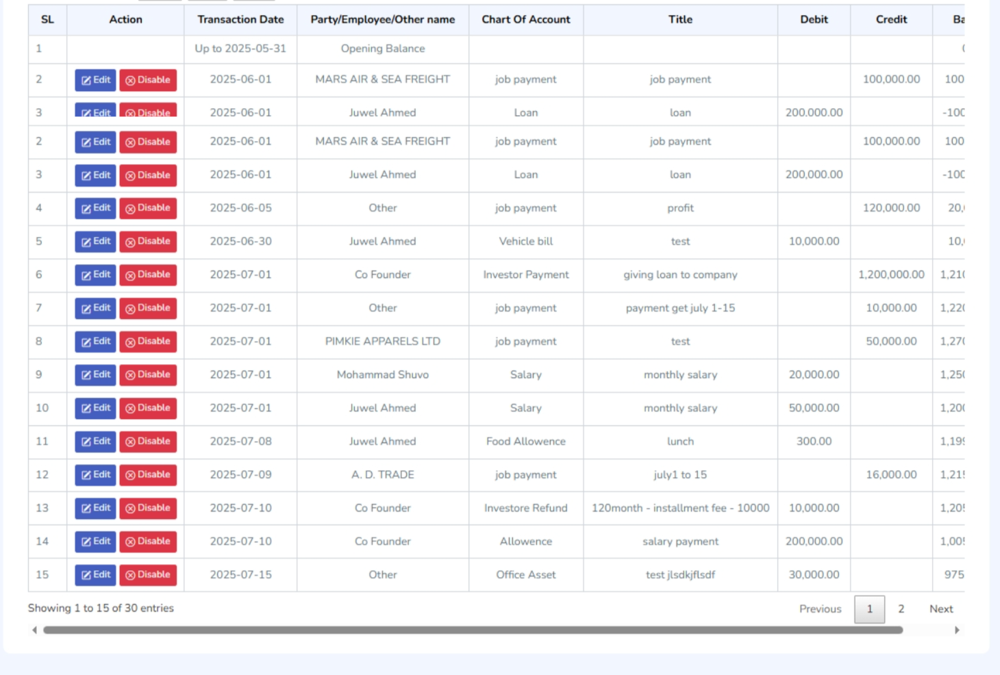The table columns are optimized to record the most important details of daily transactions:
- SL: Sequential number for the day’s transaction.
- Action: Tools for editing, viewing, or printing records.
- Transaction Date: Indicates the date of the financial movement.
- Party/Employee/Other Name: Identifies who the transaction involved.
- Chart of Account: Specifies the related account category.
- Title: Short summary of transaction details.
- Debit: Represents all daily expenditures.
- Credit: Represents all daily incomes.
- Balance: Displays the final balance after all entries of the day.
The ledger uses an automatic balance recalculation system that updates after each transaction. Each month’s closing total is rolled forward as the next month’s starting point, ensuring continuous financial flow.
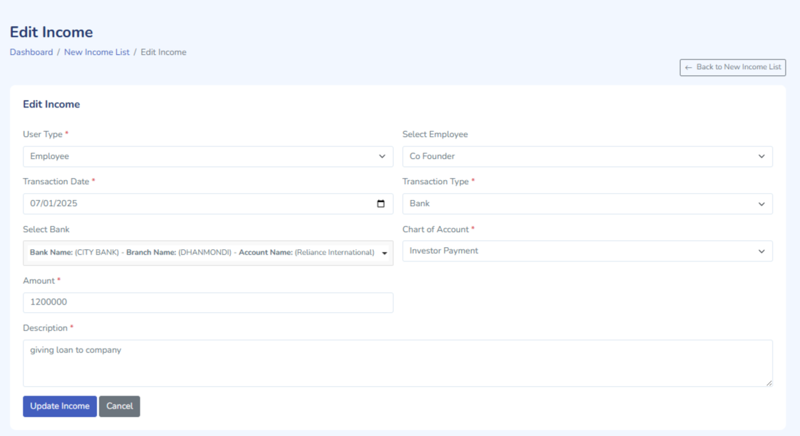The Edit option lets administrators refine daily entries as required. The form layout adjusts dynamically according to transaction type, preserving data accuracy across all ledgers.
Employee Voucher
The Employee Voucher module helps employees track their job-related earnings and vouchers efficiently. It provides quick insight into total received amounts, submitted vouchers, and outstanding balances for any selected period.

Employees can view all transactions in one place, submit new vouchers directly through the system, and filter records by month or year, making personal financial tracking and reconciliation easier.
Voucher Lists
The Voucher Lists page displays all employee vouchers in a structured table format, providing a clear overview of each entry. Administrators and employees can view key details such as voucher amounts, associated jobs, submission dates, and status, facilitating easy tracking and review.

The Voucher Lists table provides a comprehensive view of all employee vouchers, making it easy to track and review each entry efficiently. Each column represents key information related to the voucher and its associated details.
- SL: Serial number indicating the order of each voucher in the table.
- Action: Options to view, edit, or delete the voucher entry.
- Employee: Name of the employee associated with the voucher.
- Voucher Type: Category of the voucher, such as job-related or expense-related.
- Voucher Name: Title of the voucher.
- Bill No: Reference number for the related bill.
- Amount: Total value of the voucher.
- Extra Bill: Any additional charges associated with the voucher.
- Profit: Profit generated from the voucher.
- Voucher Date: Date when the voucher was issued or recorded.
- Last Update: Date and time of the most recent modification to the voucher entry.
- Created Date: Date when the voucher was initially created in the system.
The filter option allows users to narrow down voucher records based on key criteria. Administrators and employees can select a specific employee, voucher type, and a date range using From Date and To Date fields to quickly locate relevant entries.
Settings
Agent Login Page
The Agent Login page enables agents to securely access their personalized dashboards. It provides a clean and intuitive interface for entering credentials and managing jobs and transactions efficiently.
Login Process
To log in as an agent, the following credentials are required:
- Email: Enter your registered email address to identify your account.
- Password: Provide your secure password to gain access to the dashboard.
Agent Dashboard Overview
The Agent Dashboard provides a comprehensive overview of daily activities and job performance. Agents can track total, initialized, processing, and completed jobs for the day. It also includes interactive line and bar charts displaying job trends, along with a table listing recent jobs, their status, and creation dates.
Features
- Today's Total Jobs: Displays the number of jobs created by the agent today for quick workload assessment.
- Today's Initialized Jobs: Shows jobs that have been started but not yet fully processed, helping prioritize pending work.
- Today's Processing Jobs: Lists all jobs currently in progress, offering clear insight into active operations.
- Today's Completed Jobs: Highlights jobs completed today, helping agents track task completion and productivity.
- Job Creation Over Time (Line Chart): Displays job creation trends, enabling performance analysis over time.
- Job Summary (Bar Chart): Compares today’s jobs with total completed jobs, giving a quick overview of workflow progress.
- Recent Jobs Table: Lists recently created jobs with details like Job No, Status, and Creation Date for easy reference.

- Top Cards: Summarize today’s job counts—created, initialized, processing, and completed.
- Charts: Visualize job creation trends and performance comparisons.
- Recent Jobs Table: Displays job data with easy access to status tracking.
Jobs Management
The Job Management section provides agents with tools to create, monitor, and manage all jobs efficiently. It integrates job creation and listing functionalities for smooth workflow control and accurate record keeping.
Job Listing Page
The Jobs page gives agents a centralized view of all existing jobs. Users can apply filters through the collapsible filter panel or add new jobs using the “Add Job” button. Below these options lies a dynamic table presenting all job records for easy tracking and management.

Page Features
The Jobs page includes key tools for efficient management—filtering, job creation, and detailed record viewing—all designed for streamlined workflow handling.
-
Filter Panel: Enables agents to refine job results based on various
criteria. The collapsible panel saves screen space when not in use.
- Parties: Displays available parties associated with jobs.
- Terminal: Filters jobs by the terminal involved.
- Job Type: Filters based on job category.
- Job Status: Narrows jobs by their current status (e.g., Pending, Processing).
- From Date / To Date (Created Date): Sets date ranges for job filtering.
- Add Job Button: Redirects users to the Job Creation page, allowing new jobs to be added instantly.
-
Jobs Table: Displays all job entries in a structured table format with
actionable controls.
- SL: Serial number for each entry.
- Action: Edit, view, or delete job entries.
- Job No / Bill No / Invoice No / B/E No: Unique identifiers and related billing references.
- Status / Type: Displays job state and category.
- Party / Employee / Terminal: Shows associated party, assigned agent, and terminal used.
- Updated By / Last Update / Create Date: Tracks change history and job creation date.
Job Creation Page
The Job Creation page allows agents to register new jobs by providing all required details. It can be accessed directly from the “Add Job” button on the Jobs page, ensuring a seamless workflow for job entry and management.

Employee Voucher
The Employee Voucher page allows agents to manage vouchers efficiently. Users can filter vouchers by year or month, add new vouchers, and view key financial summaries such as total voucher amount, total received, and current balance. Two charts visually display total received vouchers and overall voucher distribution.

Page Features
- Filter Panel: Enables voucher filtering by year or month for quick record retrieval.
- Add Voucher: Opens a popup form to create a new voucher with fields for Voucher Type, Voucher Amount, and Voucher Date, allowing instant entry without leaving the page.
- Voucher Summary: Displays total vouchers, total received, and real-time balance—indicating whether it is positive or negative.
- Charts: Presents visual insights through two charts: one for total received vouchers and another summarizing all voucher data.
Voucher List Page
The Voucher List page provides a comprehensive table of all vouchers for easy monitoring and management. Agents can filter by voucher type, date range, and view essential information including serial number, employee, voucher type, name, bill number, amount, voucher date, last update, and creation date. Pagination, search, and display controls help users navigate records effortlessly.

Route Structure
Understanding the application's route structure and URL patterns.
Route Prefix
All business management routes are prefixed with /cnf and protected by
authentication:
Route Naming Convention
Consistent naming pattern for all routes:
Data Table Routes
AJAX routes for datatable functionality:
Frequently Asked Questions
Installation & Setup
A: Access your application at
https://yourdomain.com/cnf and login with the default
admin credentials.
A: Yes, update the route prefix in your routes file and ensure all links are updated accordingly.
User Management
A: Use the Roles section in the admin panel to create new roles and assign specific permissions to each role.
A: Yes, assign employees to different roles with specific permissions to control their access levels.
Financial Management
A: Use the Chart of Accounts section to create account categories and sub-accounts based on your business needs.
A: Yes, you can add and manage multiple bank accounts in the Bank Management section.
Support Policy
What's Included
- Installation Support: Assistance with initial setup and configuration
- Bug Fixes: Resolution of reported issues and errors
- Documentation Updates: Continuous improvement of documentation
- Security Updates: Important security patches and updates
- Basic Configuration: Help with standard configuration options
What's Not Included
- Custom feature development
- Server configuration and management
- Major version upgrades
- Third-party integration development
- Design and UI customization
Getting Support
For support requests, please contact us through:
- Email: support@cnflaravel.com
- Support Portal: https://support.cnflaravel.com
- Documentation: Always check this documentation first